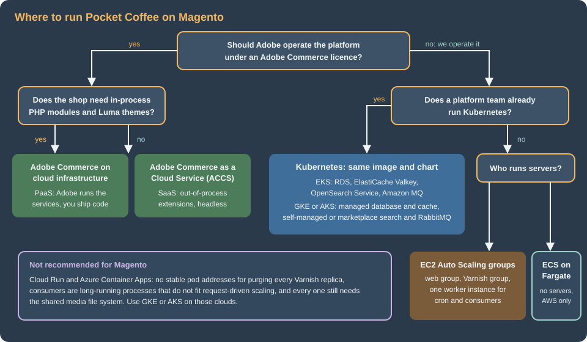
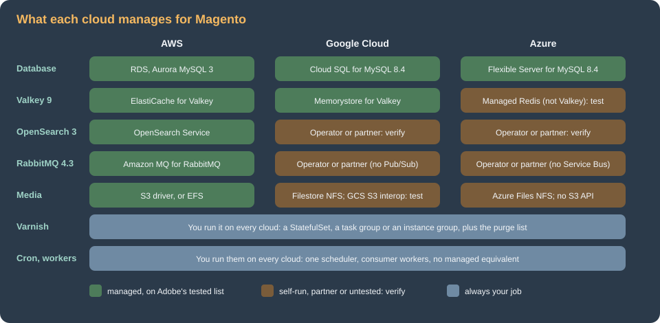

Cloud: Google Cloud, Azure and Alternatives
|
This content was generated with the assistance of AI and should be verified against the official documentation before being relied on in production. |
This page was written against Magento Open Source and Adobe Commerce 2.4.9 (GA 2026-05-12) and Mage-OS 3.6.0 on PHP 8.5,
Kubernetes 1.36 and 1.37, MySQL 8.4 on Cloud SQL and on Azure Database for MySQL Flexible Server, Memorystore for Valkey 9.x,
OpenSearch 3 and RabbitMQ 4.3, and was checked on 2026-10-29. It names no prices: sizes are starting points to measure on your
own traffic. The Kubernetes manifests were validated against the Kubernetes 1.36 schemas with kubeconform (custom resources
were checked for syntax only because their schemas are not part of Kubernetes), the shell with shellcheck, the JSON with a
parser and the OpenTofu with tofu validate and tofu fmt -check. No cloud account was used: the gcloud, az and aws
commands are composed from the vendors' documentation and from the Google Cloud, Azure and AWS pages of this site and have
not been run, so verify each flag with --help on the CLI version you install. The statements about Magento’s own behaviour
come from Adobe’s documentation and from the 2.4-develop source of magento/magento2, and were not reproduced on every cloud,
so each one says what to test.
The other pages of this section build one architecture on AWS: Pocket Coffee on EKS in eu-west-1, with the database in RDS,
search in OpenSearch Service, cache and sessions in ElastiCache for Valkey, the queue in Amazon MQ for RabbitMQ, media in S3
and the secrets in Secrets Manager (start with Cloud: Reference Architecture
and Cloud: EKS Infrastructure and Helm Deployment). Nothing in that
design belongs to AWS except the services that fill each tier. Magento is the most demanding of the shops of this site on
this point, because it needs five stateful services and only one of them (the database) is managed everywhere. This page maps the
tiers to Google Cloud and Azure, says honestly where you have to run or buy a service, shows the commands and manifests that
differ, compares the options that do not use Kubernetes, and places the self-managed design next to Adobe’s own hosted
offers. The shared fundamentals are on the cloud pages of this site and are linked where they apply:
GKE Clusters, Cloud SQL,
AKS Clusters and PostgreSQL and MySQL on Azure.
What stays the same, what changes
The container image of Cloud: Container Image and Pipeline Build
(compiled code, static content per locale and theme, nginx and PHP-FPM, production mode, read-only code), the Helm chart
pocketcoffee-magento (Deployments pocketcoffee-web and the consumers, StatefulSet pocketcoffee-varnish, CronJob
pocketcoffee-cron, Jobs pocketcoffee-install, pocketcoffee-migrate and pocketcoffee-reindex), the env.php template
that reads its settings from the environment, bin/magento and the release sequence of
Cloud: Releases and Zero-Downtime Deployments are the
same on every conformant Kubernetes. What changes is in six places:
-
How pods get cloud credentials: EKS Pod Identity on AWS, Workload Identity Federation for GKE on Google Cloud, Microsoft Entra Workload ID on Azure. Magento needs cloud credentials only for secrets and, on AWS, for the S3 media bucket.
-
How Magento reaches the database, and whether the connection can be encrypted (the Cloud SQL Auth Proxy, or the TLS options of the Azure server).
-
Which service backs each of the two Valkey roles (cache and sessions): the Valkey 9 that Adobe lists is a managed service on AWS and Google Cloud and is not on Azure.
-
Where search and the message queue come from: Amazon OpenSearch Service and Amazon MQ exist only on AWS, so on the other two clouds these are the two services you run, or buy from a partner.
-
Which shared file system holds
pub/media: S3 through Magento’s remote storage driver on AWS, a managed NFS service (EFS, Filestore, Azure Files) everywhere else. -
The HTTP entry: AWS Load Balancer Controller, GKE Gateway, or an Azure gateway, always in front of Varnish for customer traffic.

Five Magento facts that shape every cloud
Five properties of Magento 2.4.9, each taken from Adobe’s documentation or read from the source, decide more than the choice of cloud does.
Adobe’s 2.4.9 matrix lists Valkey 9 and OpenSearch 3, and nothing else for those two roles. The system requirements page
for 2.4.9 lists, for on-premises installations, MariaDB 12.3, MySQL 8.4, OpenSearch 3, Valkey 9, RabbitMQ 4.3, ActiveMQ Artemis 2,
Varnish 8 and AWS Aurora (MySQL) at 8.0.mysql_aurora.3.12 or latest available. It has no Redis row and no Elasticsearch row
for 2.4.9. Two consequences follow. First, a managed service that is Valkey (Memorystore for Valkey, ElastiCache for Valkey)
sits on the tested list and a managed service that is Redis (Azure Managed Redis) does not: it speaks the Redis protocol that
Valkey inherited, so it may well work, but it is outside what Adobe tests. Second, "Elastic Cloud" on a marketplace is
Elasticsearch, which the 2.4.9 page does not list, so the search options on Google Cloud and Azure are OpenSearch
(self-managed, or from a partner that sells OpenSearch).
The Redis client library is documented for standalone servers, Sentinel and a cluster-mode-disabled ElastiCache. Magento’s
cache and session backends use the colinmollenhour/cache-backend-redis library; its README describes a single server,
Redis Sentinel with sentinel_master and an ElastiCache setup with cluster mode disabled, and does not describe Redis
Cluster. So the shape to look for on any cloud is a single endpoint in front of one primary and its replicas. Memorystore for
Valkey offers it (a cluster mode disabled instance runs on a single shard), Azure Managed Redis offers it through its
EnterpriseCluster or NoCluster clustering policy, and its default OSSCluster policy is the one to avoid because it needs
a client that follows cluster redirects.
The message queue speaks AMQP 0-9-1, or STOMP, or MySQL. The queue node of env.php has amqp (RabbitMQ), stomp
(ActiveMQ Artemis) and the built-in db connection, as described on
CLI, Cron and Message Queues. Google Cloud Pub/Sub is an HTTP and gRPC
service and Azure Service Bus uses AMQP 1.0 as its protocol, a different protocol from the AMQP 0-9-1 that RabbitMQ speaks, so
neither can be pointed at by the amqp connection. Neither is documented by Adobe as a Magento broker. The choices on Google
Cloud and Azure are RabbitMQ that you run (the RabbitMQ Cluster Operator), RabbitMQ from a partner, ActiveMQ Artemis (listed
by Adobe and not covered by this section), or the db connection with its limits (every publish and every consumer poll is
load on the primary database).
Remote storage has one driver. bin/magento setup:config:set --remote-storage-driver=<driver> accepts file (remote storage
off) and aws-s3; Adobe’s page lists Amazon S3 as the only supported service, says remote storage is limited-support on Adobe
Commerce on cloud infrastructure and says Adobe cannot fully troubleshoot the storage service. In the 2.4-develop source the
Magento_AwsS3 module registers exactly one driver factory (aws-s3), and Magento_RemoteStorage defines the options
--remote-storage-endpoint and --remote-storage-path-style that Adobe’s parameter table does not list. So pointing the S3
driver at an S3-compatible endpoint is mechanically possible, and it is not a documented or supported configuration. There is
no Azure Blob or Google Cloud Storage driver in the core: an Azure Blob adapter exists on the Commerce Marketplace as a
third-party extension. Everywhere but AWS the media decision is therefore a shared NFS volume or an S3-compatible endpoint
you test yourself.
The database client is configurable, and its TLS settings come from env.php. Magento’s MySQL adapter reads a
driver_options array from the connection settings, so PDO’s SSL attributes can be set, unlike the PrestaShop client; the
settings and the privileges of the two database users are on
Cloud: Managed Database (RDS and Aurora) and apply to all three clouds. The
Magento-specific parameter is log_bin_trust_function_creators: with binary logging on (which every HA managed database has), MariaDB needs it set to ON for the
triggers that Magento’s indexers create (MySQL 8.4 did not in the test on that page; setting it does no harm), and each cloud calls it a database flag (Cloud SQL), a server
parameter (Azure) or a parameter group entry (RDS). Without it setup:upgrade fails when it creates the triggers.

Google Cloud: GKE, Cloud SQL, Memorystore and Filestore
The cluster, the database and the caches
An Autopilot cluster removes node management, enables the Filestore CSI driver and Workload Identity Federation for GKE by default, and is the closest equivalent of EKS Auto Mode; a Standard cluster keeps node pools under your control (cluster commands are on GKE Clusters). The Magento-specific point is that the web pods, the consumers and Varnish all need CPU and memory requests that match what the autoscaler measures, and Autopilot requires them anyway.
The script below creates the cluster, a regional Cloud SQL for MySQL 8.4 instance with the trigger flag, and two Memorystore for Valkey instances with a single shard and one replica each, one for the Magento cache and one for sessions (Adobe recommends one instance per purpose; see Cloud: OpenSearch, Valkey and RabbitMQ as Managed Services).
#!/usr/bin/env bash
set -euo pipefail
PROJECT_ID="$(gcloud config get-value project)"
REGION=europe-west1
NETWORK=default
gcloud services enable container.googleapis.com artifactregistry.googleapis.com \
sqladmin.googleapis.com secretmanager.googleapis.com file.googleapis.com \
memorystore.googleapis.com
gcloud artifacts repositories create pocketcoffee \
--repository-format=docker --location="$REGION"
gcloud container clusters create-auto pocketcoffee-prod \
--location="$REGION" --release-channel=regular
gcloud container clusters get-credentials pocketcoffee-prod --location="$REGION"
kubectl create namespace pocketcoffee
# Cloud SQL for MySQL 8.4, regional (primary + standby), private address only.
gcloud sql instances create pocketcoffee-prod \
--database-version=MYSQL_8_4 \
--edition=ENTERPRISE \
--tier=db-custom-4-15360 \
--region="$REGION" \
--availability-type=REGIONAL \
--network="projects/$PROJECT_ID/global/networks/$NETWORK" \
--no-assign-ip \
--ssl-mode=ENCRYPTED_ONLY \
--storage-type=SSD --storage-size=100GB --storage-auto-increase \
--enable-bin-log --retained-backups-count=14 --retained-transaction-log-days=7 \
--database-flags=log_bin_trust_function_creators=on \
--deletion-protection
gcloud sql databases create pocketcoffee \
--instance=pocketcoffee-prod --charset=utf8mb4 --collation=utf8mb4_unicode_ci
# The passwords come from the operator's environment, never from a file in Git.
gcloud sql users create mg_app --instance=pocketcoffee-prod --host=% --password="$MG_APP_PASSWORD"
gcloud sql users create mg_migrate --instance=pocketcoffee-prod --host=% --password="$MG_MIGRATE_PASSWORD"
# Memorystore for Valkey, one instance per purpose, a single shard (cluster mode disabled).
for purpose in cache session; do
gcloud memorystore instances create "pocketcoffee-prod-$purpose" \
--location="$REGION" \
--mode=cluster-disabled \
--shard-count=1 --replica-count=1 \
--node-type=standard-small \
--engine-version=VALKEY_9_0 \
--endpoints="connections=[{pscAutoConnection={network=projects/$PROJECT_ID/global/networks/$NETWORK,projectId=$PROJECT_ID}}]" \
--transit-encryption-mode=server-authentication \
--authorization-mode=auth-disabled \
--deletion-protection-enabled
doneSome of the choices in the script are decisions to review:
-
--engine-version: the value written is the spelling the Memorystore API uses for Valkey 9.0 at the check date (the documentation lists Valkey 7.2, 8.0, 9.0 and 9.1); rungcloud memorystore instances create --helpand use what your CLI accepts. Magento 2.4.9 is tested on Valkey 9. -
--authorization-mode=auth-disabled: Memorystore offers IAM authentication, ACL policies and basic token-based authentication. IAM authentication uses short-lived tokens, which Magento’s long-lived connection settings inenv.phpcannot refresh, so an instance with PSC access that only the cluster can reach is combined here with TLS but no password. If your policy requires a credential, use the token-based mode and keep the token in Secret Manager; read the Memorystore authentication page for what the mode issues, because this page did not test it. -
TLS:
server-authenticationencrypts the connection. The Magento client must connect with TLS and trust the instance’s certificate authority; add the CA certificate to the image’s trust store, and verify the host syntax the client library accepts for TLS on the page for managed services of this section. -
Cloud SQL’s
ENCRYPTED_ONLY: the proxy below encrypts on its own, and a direct private connection from Magento needsdriver_optionsfor the CA, so a decision between the proxy and a direct TLS connection is the first one to make. -
Memorystore needs a service connection policy for the network and region before an instance can be created (the command reference says so); creating it is part of the network setup of VPC Networking on Google Cloud.
Cloud SQL and the Auth Proxy in the Jobs
Cloud SQL gives Magento a primary and a standby in two zones with --availability-type=REGIONAL, a private address, and point-in-time
recovery from the binary log. The Cloud SQL Auth Proxy authenticates with the pod’s Google identity, encrypts the traffic and
listens on a local port, so MAGENTO_DB_HOST is 127.0.0.1 in every pod and there is no TLS setting in env.php. Magento is
more flexible than PrestaShop here (a direct TLS connection with driver_options works too), so the proxy is a choice, not a
necessity; its price is one sidecar per pod and a lifecycle problem in the Jobs.
The proxy runs as a sidecar. In a Job a normal sidecar never exits, so pocketcoffee-migrate, pocketcoffee-install and
pocketcoffee-reindex would never complete. The remedy is a native sidecar, an init container with restartPolicy: Always,
which Kubernetes stops when the main container finishes. The Job below runs the migration gate of the release page against
127.0.0.1:3306; in the chart the same fragment is a conditional block of the pod templates of the web Deployment, the consumers
and the Jobs.
apiVersion: batch/v1
kind: Job
metadata:
name: pocketcoffee-migrate
namespace: pocketcoffee
spec:
backoffLimit: 0
template:
spec:
restartPolicy: Never
serviceAccountName: pocketcoffee-magento
initContainers:
- name: cloud-sql-proxy
image: gcr.io/cloud-sql-connectors/cloud-sql-proxy:<pinned-2.x-version>
restartPolicy: Always
args:
- "--private-ip"
- "--structured-logs"
- "--port=3306"
- "<project-id>:europe-west1:pocketcoffee-prod"
securityContext:
runAsNonRoot: true
allowPrivilegeEscalation: false
readOnlyRootFilesystem: true
capabilities:
drop: ["ALL"]
resources:
requests: {cpu: 50m, memory: 64Mi}
containers:
- name: migrate
image: europe-west1-docker.pkg.dev/<project-id>/pocketcoffee/magento:<git-sha>
workingDir: /var/www/html
command: ["sh", "-c"]
args:
- |
# 0 = current, 2 = upgrade required, anything else = failure.
rc=0
bin/magento setup:db:status --no-interaction || rc=$?
if [ "$rc" -eq 2 ]; then
exec bin/magento setup:upgrade --keep-generated --no-interaction
fi
exit "$rc"
env:
- name: MAGENTO_DB_HOST
value: "127.0.0.1"
envFrom:
- secretRef:
name: pocketcoffee-magentoThe command line of the container is a sketch of the gate: it runs setup:upgrade --keep-generated only for exit code 2
of setup:db:status and fails the Job on any other non-zero code. The chart of the release page does the same with the
mg_migrate user, which this excerpt does not model. The Kubernetes
ServiceAccount is bound to roles/cloudsql.client with a principal identifier that names the namespace and the ServiceAccount
(see Cloud SQL). One proxy per pod multiplies the connections Cloud SQL sees, so
pm.max_children times the maximum replica count of the web Deployment, plus the consumers and the cron pods, must stay below
the instance’s max_connections.
OpenSearch: no Google-managed service
Google Cloud has no managed OpenSearch service of its own (verify the current catalogue before relying on this statement). The options are the following:
-
The OpenSearch Kubernetes Operator from the OpenSearch project, an Apache-2.0 operator whose custom resource is
OpenSearchClusterin the API groupopensearch.org(the olderopensearch.opster.iogroup is deprecated). Its 3.0.0 release supports OpenSearch 2.19.2 up to the latest 3.x. It is installed with its Helm chart, needs cert-manager for its validation webhook unless you turn that off, and it generates TLS certificates and theadminuser’s password for the cluster it creates. You own the upgrades, the snapshots and the disks. -
A partner service that sells OpenSearch, bought through the marketplace of the cloud. Aiven lists Google Cloud and Azure among its clouds, with the caveat that not every service is available in every region. Confirm in the partner’s own service catalogue that OpenSearch 3 exists in your region and that it is reachable from the cluster over private connectivity.
-
Elasticsearch from Elastic’s marketplace offers is not an option for 2.4.9, because the 2.4.9 requirements page has no Elasticsearch row.
apiVersion: opensearch.org/v1
kind: OpenSearchCluster
metadata:
name: pocketcoffee-search
namespace: pocketcoffee
spec:
general:
serviceName: pocketcoffee-search
version: "3"
nodePools:
- component: nodes
replicas: 3
diskSize: "50Gi"
resources:
requests:
memory: "4Gi"
cpu: "1"
limits:
memory: "4Gi"
roles:
- "cluster_manager"
- "data"
security:
tls:
transport:
generate: true
http:
generate: trueThree data nodes with the cluster-manager role on each are a starting point, not a recommendation: size memory from the
number of products and store views (the index sizes of the existing Caching, Indexing and Performance
page apply) and give the operator a storage class with zone-aware volumes. Magento’s side is the same as on AWS: engine
opensearch, the host and port of the pocketcoffee-search Service, the user and password in the secret and the index prefix
pocketcoffee, set with setup:config:set or the Admin configuration as on the managed services page. The operator creates the
admin user; create a dedicated magento user with the privileges Magento needs through the OpenSearch security API rather
than giving Magento the administrator account.
RabbitMQ: no Pub/Sub
The queue is the second service you run or buy. RabbitMQ publishes its own Kubernetes operator, the RabbitMQ Cluster Operator,
whose custom resource is RabbitmqCluster; the RabbitMQ team develops it and it is open source. A partner such as CloudAMQP
sells RabbitMQ as a service on several clouds (check the cloud, region and the 4.3 version on its site, because this page did
not).
apiVersion: rabbitmq.com/v1beta1
kind: RabbitmqCluster
metadata:
name: pocketcoffee-mq
namespace: pocketcoffee
spec:
replicas: 3
persistence:
storageClassName: standard-rwo
storage: 20Gi
resources:
requests:
cpu: "1"
memory: 2Gi
limits:
memory: 2GiThe operator publishes a Secret with the default user’s credentials and a Service named after the cluster; the amqp node of
env.php takes the Service host, the port (5672, or 5671 with TLS configured on the cluster) and the user from the secret
store, exactly as with Amazon MQ. KEDA’s RabbitMQ scaler works the same against the Service’s management port, as in
Cloud: Cron, Queue Consumers and Indexers. What you take on is what Amazon
MQ did: quorum queue settings, upgrades (RabbitMQ 4.3 is the version Magento 2.4.9 is tested on), disk alarms and backups of
the definitions.
Media: Filestore, and Cloud Storage with care
Filestore is a managed NFS server and the GKE driver exposes it as ReadWriteMany volumes. The Enterprise tier is the one
replicated across zones; the minimum instance sizes are large (see
Block and File Storage on Google Cloud), and a zonal instance is a
single-zone dependency under a multi-zone cluster, a decision to take knowingly. The claim is the one the naming sheet of the
chart calls pocketcoffee-media, mounted at pub/media:
apiVersion: v1
kind: PersistentVolumeClaim
metadata:
name: pocketcoffee-media
namespace: pocketcoffee
spec:
accessModes: ["ReadWriteMany"]
storageClassName: enterprise-rwx
resources:
requests:
storage: 1TiCreate the pub/media tree once with an admin Pod, run PHP-FPM as the user that owns it (the Google documentation recommends
fsGroup for shared-volume ownership and warns that fsGroup with the ROOT_SQUASH export option gives "Access denied"),
and keep PHP code, generated/, pub/static and var/ off it, as on every cloud. Magento writes the resized catalog images under
pub/media/catalog/product/cache, so the share takes many small writes and one resize per product image and size; the
resize behaviour is on Cloud: Media and Remote Storage.
Cloud Storage as an S3-compatible bucket is the other option, and the one to test rather than assume. Cloud Storage’s XML
API is documented as interoperable with Amazon S3 tools at https://storage.googleapis.com, authenticated with HMAC keys. With
Magento that means:
-
setup:config:set --remote-storage-driver=aws-s3 --remote-storage-endpoint=https://storage.googleapis.com --remote-storage-bucket=<bucket> --remote-storage-region=<region> --remote-storage-key=<hmac-key> --remote-storage-secret=<hmac-secret>, where the key and secret are an HMAC key of a service account (static keys, because the driver’s credential chain is the AWS one and Workload Identity does not feed it), kept in Secret Manager and injected as environment variables. -
The behaviour is undocumented by Adobe for this endpoint: whether the AWS SDK that your Magento version bundles sends only requests the XML API accepts, whether
remote-storage:synccompletes, and whether the Admin media gallery works are things to test on a staging bucket before production. Adobe states that troubleshooting the storage service is the customer’s responsibility. -
The resized-image cache and other generated files are still local, as on AWS; see the media page.
If the test fails, use Filestore. The Cloud Storage FUSE CSI driver is a third route that this page did not test: it presents object storage as a file system with semantics different from NFS.
Secrets and entry
The secrets are Secret Manager secrets delivered with the External Secrets Operator into the Kubernetes Secret
pocketcoffee-magento with the same keys as on AWS (see Secret Manager and KMS;
crypt_key is only ever a reference). The entry is a GKE Gateway with Cloud Armor (see
Load Balancing and Cloud Armor and
GKE Microservices): customer traffic goes to the Varnish Service and
/admin_pocketcoffee to the web or admin Service, as on EKS. Media goes through Cloud CDN (see
Cloud CDN and Media CDN), and the Varnish page,
Cloud: Varnish and Full Page Cache on Kubernetes, applies unchanged,
including offloader_header behind the load balancer.
The same infrastructure with OpenTofu
The google provider describes the Cloud SQL instance of the script in a few lines. The Azure server has the same shape with
azurerm_mysql_flexible_server and azurerm_mysql_flexible_server_configuration, which this page did not validate.
terraform {
required_version = ">= 1.12"
required_providers {
google = {
source = "hashicorp/google"
version = "~> 7.0"
}
}
}
provider "google" {
project = var.project_id
region = "europe-west1"
}
variable "project_id" {
type = string
}
variable "network_id" {
description = "Self link of the VPC with private services access configured."
type = string
}
resource "google_sql_database_instance" "magento" {
name = "pocketcoffee-prod"
database_version = "MYSQL_8_4"
region = "europe-west1"
deletion_protection = true
settings {
edition = "ENTERPRISE"
tier = "db-custom-4-15360"
availability_type = "REGIONAL"
disk_type = "PD_SSD"
disk_size = 100
disk_autoresize = true
backup_configuration {
enabled = true
binary_log_enabled = true
start_time = "03:00"
transaction_log_retention_days = 7
}
ip_configuration {
ipv4_enabled = false
private_network = var.network_id
ssl_mode = "ENCRYPTED_ONLY"
}
database_flags {
name = "log_bin_trust_function_creators"
value = "on"
}
}
}
resource "google_sql_database" "magento" {
name = "pocketcoffee"
instance = google_sql_database_instance.magento.name
charset = "utf8mb4"
collation = "utf8mb4_unicode_ci"
}The provider version validated was google 7.46, with OpenTofu 1.12.6. The listing needs a VPC with private services access,
which the site’s network pages create. The shape of the infrastructure code is on
Infrastructure as Code on Google Cloud and
Infrastructure as Code on Azure.
Azure: AKS, Azure Database for MySQL, Azure Files and Azure Managed Redis
The cluster, the database and the cache
#!/usr/bin/env bash
set -euo pipefail
RG=rg-pocketcoffee
LOCATION=westeurope
az group create --name "$RG" --location "$LOCATION"
az acr create --resource-group "$RG" --name acrpocketcoffee --sku Standard
az aks create \
--resource-group "$RG" --name pocketcoffee-prod \
--tier standard --node-count 3 --zones 1 2 3 \
--network-plugin azure --network-plugin-mode overlay --network-dataplane cilium \
--enable-oidc-issuer --enable-workload-identity \
--enable-addons azure-keyvault-secrets-provider \
--attach-acr acrpocketcoffee --generate-ssh-keys
az aks get-credentials --resource-group "$RG" --name pocketcoffee-prod
kubectl create namespace pocketcoffee
# Azure Database for MySQL Flexible Server 8.4 in a delegated subnet (VNet integration).
az mysql flexible-server create \
--resource-group "$RG" --name mysql-pocketcoffee-prod --location "$LOCATION" \
--tier GeneralPurpose --sku-name Standard_D4ds_v4 --storage-size 128 \
--version 8.4 --high-availability ZoneRedundant --zone 1 --standby-zone 2 \
--vnet vnet-pocketcoffee --subnet snet-mysql \
--private-dns-zone mysql-pocketcoffee.private.mysql.database.azure.com \
--database-name pocketcoffee \
--admin-user mg_admin --admin-password "$MYSQL_ADMIN_PASSWORD"
# Magento runs triggers: allow functions to be created under binary logging.
az mysql flexible-server parameter set \
--resource-group "$RG" --server-name mysql-pocketcoffee-prod \
--name log_bin_trust_function_creators --value ON
# Azure Managed Redis (Redis Enterprise based, not Valkey): one endpoint, one database.
az extension add --name redisenterprise --only-show-errors
az redisenterprise create \
--resource-group "$RG" --cluster-name pocketcoffee-prod-cache --location "$LOCATION" \
--sku Balanced_B5 --zones 1 2 3 \
--clustering-policy EnterpriseCluster --eviction-policy VolatileLRU \
--client-protocol Encrypted --minimum-tls-version 1.2 \
--access-keys-authentication Enabled --port 10000The points that differ from RDS and Cloud SQL:
-
Networking is fixed at creation. Public access versus VNet integration cannot be changed later, and a VNet-integrated server needs a subnet delegated to
Microsoft.DBforMySQL/flexibleServersand a private DNS zone. Choose private access for production and keep a debug Pod in the VNet for imports. -
Versions. MySQL 8.4 is generally available and is the version Adobe lists for 2.4.9; 8.0 reaches the end of standard support on 2027-01-31 and then moves to automatically charged extended support, and 8.0 is not listed for 2.4.9. The 9.x innovation versions are preview only without HA, replicas or backups. Do not use Azure Database for MariaDB: the service was retired on 2025-09-19 and Microsoft’s path is Flexible Server for MySQL. If you want MariaDB 12.3, which Adobe also lists, run it yourself or use another provider; that is a different design from the one in this section.
-
TLS is on by default.
require_secure_transportis ON, so Magento must connect over TLS: set the CA file indriver_options(the managed database page shows the shape) with the CA bundle Microsoft publishes for the service, and bake it into the image. Magento’s client can do this, unlike PrestaShop’s, so switching the parameter off is not needed. -
Triggers. The
log_bin_trust_function_creatorsparameter is set in the script; check the name and the allowed values withaz mysql flexible-server parameter listbecause Microsoft has changed parameter exposure between versions. -
No built-in connection pooler for MySQL. Keep
pm.max_childrentimes the replicas belowmax_connectionsof the SKU. -
Authentication. Microsoft Entra authentication issues short-lived tokens, which Magento’s
env.phpcannot refresh; use password authentication with the secret in Key Vault, and keep Entra for operators.
Azure Managed Redis and Valkey
Azure Managed Redis runs on the Redis Enterprise stack and is Microsoft’s current first-party cache; Azure Cache for Redis is being retired in its favour (the dates are on Microsoft’s retirement page, and the Azure pages of this site list them, see Redis and Partner Databases on Azure). Three facts matter for Magento:
-
It is not Valkey. Adobe tests 2.4.9 against Valkey 9, so this is a service to test on a staging shop before production, with the cache and the session instance load of your own traffic, not a drop-in guarantee. The check Adobe documents (
bin/magentocommands that read and write the cache, a checkout that stores a session) are the minimum. -
Clustering policy. Every instance is internally clustered and offers three policies.
OSSClusterneeds a client that follows the Redis Cluster protocol, which Magento’s library does not document, so useEnterpriseCluster(a single endpoint that behaves as non-clustered, with limits on multi-key commands) orNoCluster(only for caches of 25 GB or less, and it cannot scale up without changing the policy). The script usesEnterpriseCluster. -
Endpoint. TLS is required by default (TLS 1.2 and 1.3) and the endpoint listens on port 10000, not 6379, so the port in
env.phpis10000. Access keys are enabled in the script so that a password can be stored in the secret store; Entra authentication issues short-lived tokens, which has the same refresh problem as above.
Use one instance per purpose, as on the other clouds: a second az redisenterprise create for the sessions, with a policy that
does not evict (NoEviction) so that an active session is never dropped, while the cache instance evicts. The eviction policies to
use, and why, are on the Valkey page of this section. If you want real Valkey on Azure, run it yourself in the cluster (the
official image and a StatefulSet) or buy it from a partner that offers it on Azure; the Azure pages of this site list no
managed Valkey service, so verify the current Azure catalogue before relying on that.
OpenSearch and RabbitMQ on Azure
Neither is a first-party Azure service (verify the catalogue before relying on that). The choices are the same as on Google
Cloud with different names for the marketplace: the OpenSearch operator manifest and the RabbitMQ cluster manifest above work
unchanged on AKS (the storage class names differ: managed-csi-premium or an Azure Disk class instead of
standard-rwo), or a partner service bought through Azure Marketplace. Azure Service Bus is not an alternative to
RabbitMQ for Magento, for the protocol reason given above. Elastic’s native Azure integration sells Elasticsearch, which
2.4.9 does not list.
Azure Files for the media
Azure Files is the shared file system, and Blob Storage has no S3-compatible API in Microsoft’s documentation, so the S3
driver is not available as it is on AWS. Azure Files offers NFS and SMB. For pub/media use NFS: Magento creates symbolic
links and many small files, and SMB needs the uid, gid and mfsymlinks mount options to behave.
apiVersion: storage.k8s.io/v1
kind: StorageClass
metadata:
name: azurefile-nfs-pocketcoffee
provisioner: file.csi.azure.com
parameters:
protocol: nfs
skuName: Premium_LRS
reclaimPolicy: Retain
volumeBindingMode: Immediate
allowVolumeExpansion: true
mountOptions:
- nconnect=4
---
apiVersion: v1
kind: PersistentVolumeClaim
metadata:
name: pocketcoffee-media
namespace: pocketcoffee
spec:
accessModes: ["ReadWriteMany"]
storageClassName: azurefile-nfs-pocketcoffee
resources:
requests:
storage: 200GiThe NFS share is reachable only from the virtual network, so the node subnet must be allowed by the storage account’s network
rules; its Secure transfer required setting must be disabled for NFS unless the driver’s in-transit encryption is used (verify
the parameter for your driver version). Retain keeps the share when the claim is deleted. PHP code never goes on it. A
Magento-specific alternative is the third-party Azure Blob adapter from the Commerce Marketplace: it is not covered by Adobe’s
remote storage documentation, so it brings the support position of the vendor, and this page did not test it.
Key Vault, workload identity and the gateway
On AKS the ServiceAccount carries the identity of a user-assigned managed identity through a federated credential (annotation
azure.workload.identity/client-id and pod label azure.workload.identity/use: "true"), and the identity needs the role Key
Vault Secrets User on the vault (see Key Vault and Secrets and
Identity and Access). The HTTP entry is the application routing add-on’s Gateway API
implementation or Application Gateway for Containers with the Web Application Firewall, with Azure Front Door as the edge for
media.pocketcoffee.example (see AKS Microservices,
Gateways and Load Balancing and
Front Door and CDN). The managed NGINX mode rests on the retired ingress-nginx
upstream, so none of the manifests of this section use it.
Alternatives to Kubernetes
Kubernetes earns its operating cost when there are several workloads or a platform team. A Magento deployment has more moving parts than a blog, though, and the alternatives are not simpler for the parts that make Magento hard: Varnish with purge on every replica, a single cron scheduler, and consumers that run all day. Everything of the tiered architecture still holds; the compute changes, and each option changes what Magento’s state and background work look like.
ECS on Fargate
A task definition replaces the web Deployment: nginx and PHP-FPM are two containers of one task and share localhost, an ALB target
group replaces the Service and an ECS service with target-tracking scaling replaces the HPA (see
ECS and Fargate and
ECS Deployments, Scaling and Networking). What changes for Magento:
-
Media is the S3 driver with the task role (nothing to mount), or EFS declared in the task definition with an access point.
-
Secrets come from Secrets Manager through the task definition: the JSON keys of
pocketcoffee/prod/magentoare selected one by one. -
The migration step is a one-off
run-taskof the same image before the service update (the gate of the release page), instead of a Helm hook. -
Cron is an EventBridge Scheduler rule that runs
bin/magento cron:runas a task every minute. Make sure runs cannot overlap: a rule that starts a task every minute starts another one while a long cron run is still going, so the single-scheduler property of the cron page of this section needs a lock (aflockon an EFS file, or a task that loops and exits when a marker exists); this is the weakest point of the option. -
Consumers are their own ECS services, one per consumer, with the command
bin/magento queue:consumers:start <name> --max-messages=1000and a scaling policy on the queue depth through a CloudWatch metric (verify the metric names Amazon MQ publishes). -
Varnish is the hard part: the purge list in
MAGENTO_VARNISH_HOSTSmust name every Varnish instance, and task IP addresses change. The options are one Varnish container per web task (so every purge goes to every task, which means the list is the set of web tasks, refreshed from AWS Cloud Map or fromDescribeTasks), or a fixed small set of Varnish tasks behind an internal load balancer with a purge fan-out that you write. Magento does not document either; this page did not test them. If the answer is unacceptable, use EKS, where the StatefulSet gives stable names.
{
"family": "pocketcoffee-web",
"networkMode": "awsvpc",
"requiresCompatibilities": ["FARGATE"],
"cpu": "2048",
"memory": "4096",
"runtimePlatform": {"cpuArchitecture": "ARM64", "operatingSystemFamily": "LINUX"},
"executionRoleArn": "arn:aws:iam::123456789012:role/pocketcoffee-ecs-execution",
"taskRoleArn": "arn:aws:iam::123456789012:role/pocketcoffee-prod-magento",
"volumes": [
{"name": "var", "host": {}},
{
"name": "media",
"efsVolumeConfiguration": {
"fileSystemId": "fs-<id>",
"transitEncryption": "ENABLED",
"authorizationConfig": {"accessPointId": "fsap-<id>", "iam": "ENABLED"}
}
}
],
"containerDefinitions": [
{
"name": "nginx",
"image": "123456789012.dkr.ecr.eu-west-1.amazonaws.com/pocketcoffee/magento:<git-sha>-nginx",
"essential": true,
"portMappings": [{"containerPort": 8080, "protocol": "tcp"}],
"dependsOn": [{"containerName": "php-fpm", "condition": "START"}],
"mountPoints": [{"sourceVolume": "media", "containerPath": "/var/www/html/pub/media", "readOnly": true}]
},
{
"name": "php-fpm",
"image": "123456789012.dkr.ecr.eu-west-1.amazonaws.com/pocketcoffee/magento:<git-sha>",
"essential": true,
"readonlyRootFilesystem": true,
"environment": [
{"name": "MAGENTO_MODE", "value": "production"},
{"name": "MAGENTO_DB_HOST", "value": "<rds-endpoint>"},
{"name": "MAGENTO_DB_NAME", "value": "pocketcoffee"},
{"name": "MAGENTO_DB_USER", "value": "mg_app"},
{"name": "MAGENTO_VARNISH_HOSTS", "value": "<varnish-task-addresses>"}
],
"secrets": [
{"name": "MAGENTO_DB_PASSWORD", "valueFrom": "arn:aws:secretsmanager:eu-west-1:123456789012:secret:pocketcoffee/prod/magento-<suffix>:db_app_password::"},
{"name": "MAGENTO_CRYPT_KEY", "valueFrom": "arn:aws:secretsmanager:eu-west-1:123456789012:secret:pocketcoffee/prod/magento-<suffix>:crypt_key::"}
],
"mountPoints": [
{"sourceVolume": "var", "containerPath": "/var/www/html/var"},
{"sourceVolume": "media", "containerPath": "/var/www/html/pub/media"}
],
"logConfiguration": {
"logDriver": "awslogs",
"options": {
"awslogs-group": "/ecs/pocketcoffee-web",
"awslogs-region": "eu-west-1",
"awslogs-stream-prefix": "php-fpm"
}
}
}
]
}The variable names are those of the env.php template of the chart; the excerpt shows two secrets, and the other keys
(db_migrate_password, opensearch_password, the two Valkey tokens and amqp_password) follow the same pattern. The nginx
container needs the static files of the shop at the paths it serves, so build its image from the stage of the Dockerfile that holds the
code. Fargate gives each task ephemeral storage and no persistent disk, which is right for var/ (a per-task volume here
because the root file system is read-only); only the media goes on EFS or S3. The database, cache, search and queue are the same
RDS, ElastiCache, OpenSearch Service and Amazon MQ of the reference architecture, so the other pages of this section apply unchanged.
EC2 Auto Scaling groups
A team that already operates virtual machines can run the same image content on instances: an Auto Scaling group per role (see EC2 and Auto Scaling). Three groups fit Magento:
-
Web: nginx and PHP-FPM from an AMI or a pulled artifact that already holds the compiled code (
setup:di:compileandsetup:static-content:deployrun in the build, never on the instance), behind an ALB. The release is an instance refresh. Media is the S3 driver or EFS mounted with the EFS mount helper. -
Varnish: a separate group of at least two instances, each with a fixed private address from the subnet or a DNS name per instance, so the purge list is the group’s membership; the VCL comes from
bin/magento varnish:vcl:generateas on Kubernetes. -
Worker: a group with minimum and maximum of one, running the cron scheduler and the consumers under systemd. This is the place where VMs are simpler than ECS: a systemd timer is one scheduler, and
Restart=alwayskeeps consumers running.
#!/usr/bin/env bash
# User data of the "worker" Auto Scaling group (min = max = 1): cron and consumers only.
set -euo pipefail
APP=/var/www/html
install -d -o www-data -g www-data "$APP/var"
# The release is an AMI or a pulled artifact that already holds the compiled code (no setup:di:compile here).
mount -t efs -o tls,accesspoint=fsap-0123456789abcdef0 fs-0123456789abcdef0:/ "$APP/pub/media"
cat > /etc/systemd/system/magento-cron.service <<'UNIT'
[Unit]
Description=Magento cron:run (one scheduler for the whole fleet)
[Service]
Type=oneshot
User=www-data
WorkingDirectory=/var/www/html
EnvironmentFile=/etc/magento/env
ExecStart=/usr/bin/php bin/magento cron:run
UNIT
cat > /etc/systemd/system/magento-cron.timer <<'UNIT'
[Unit]
Description=Run Magento cron every minute
[Timer]
OnCalendar=*-*-* *:*:00
AccuracySec=1s
[Install]
WantedBy=timers.target
UNIT
cat > /etc/systemd/system/magento-consumer@.service <<'UNIT'
[Unit]
Description=Magento queue consumer %i
After=network-online.target
[Service]
User=www-data
WorkingDirectory=/var/www/html
EnvironmentFile=/etc/magento/env
ExecStart=/usr/bin/php bin/magento queue:consumers:start %i --max-messages=1000
Restart=always
RestartSec=2
[Install]
WantedBy=multi-user.target
UNIT
systemctl daemon-reload
systemctl enable --now magento-cron.timer
for consumer in async.operations.all product_action_attribute.update media.storage.catalog.image.resize; do
systemctl enable --now "magento-consumer@${consumer}.service"
doneThe shell was checked with shellcheck; the unit files are text inside it and were not run. /etc/magento/env is written by
your provisioning with the same variables as the chart’s Secret, readable by www-data only and never committed. A worker group
of one is a single point of failure by design: the Auto Scaling health check replaces it, and cron and consumers tolerate a gap
of a few minutes. Keep the maximum at one, because two cron schedulers at once produce duplicate runs.
Cloud Run and Azure Container Apps
Neither is a good fit for Magento: the purge list for Varnish needs stable addresses that request-driven platforms do not give, the consumers are long-running processes that do not fit scaling on requests, and the media volume is the same NFS as on Kubernetes. They suit the out-of-process pieces of a Magento landscape (a webhook receiver, an App Builder-style extension), not the shop.
Adobe Commerce on cloud infrastructure and as a Cloud Service
The self-managed design of this section is one of three ways to run the same code lineage. The other two are Adobe’s, and they change who builds everything above. See Editions and Ecosystem for the licences and the feature comparison; this section is about what each shape does with the infrastructure.
Adobe Commerce on cloud infrastructure is Adobe-managed, single-tenant hosting of the PaaS edition on AWS, Azure or Google Cloud,
with an Adobe-defined architecture, in a Pro or a Starter shape (the Starter plan has the master, a staging, a production and up
to two integration environments; the Pro production environment is a three-node high-availability setup). You do not build
an image or write a chart: the project holds .magento.app.yaml (how the application is built, deployed and run, with its
hooks and cron jobs), .magento/services.yaml (which services and versions are provisioned) and .magento/ configuration
read by the deployment tooling, and a git push starts the build and deploy. The services of the self-managed design exist on
the platform, provisioned by Adobe: the 2.4.9 requirements for Commerce on Cloud list MariaDB 12.3 (11.8 also), OpenSearch 3, Valkey 9, RabbitMQ 4.3
(ActiveMQ Artemis 2 also), PHP 8.5 and nginx. Fastly is required for Staging and Production, for the CDN, the caching with
Varnish rules and the WAF. What you give up: you cannot run a self-built container, on Pro changes to services or mounts need an
Adobe support ticket and a notice period, the remote storage module has limited support there, and Adobe enforces version and
dependency deadlines.
Adobe Commerce as a Cloud Service (ACCS) is not hosting at all: it is Adobe’s SaaS commerce platform with managed
infrastructure and continuous upgrades, customised through APIs and out-of-process apps (App Builder, events, webhooks, API Mesh)
and with a headless storefront on Edge Delivery Services; Luma storefronts are not supported. There is no infrastructure to
deploy, so none of the pages of this section apply to it, and the in-process PHP modules of the Pocket Coffee example
(PocketCoffee_RoastAdmin, PocketCoffee_Pay) would have to be rebuilt as out-of-process extensions.
| Self-managed on Kubernetes (this section) | Adobe Commerce on cloud infrastructure | Adobe Commerce as a Cloud Service | |
|---|---|---|---|
Software |
Magento Open Source, Mage-OS or Adobe Commerce on-premises |
Adobe Commerce (licence) |
Adobe Commerce (SaaS subscription) |
Who builds and runs the platform |
You: image, chart, services, patching |
Adobe provisions the services, you deploy code and patch the application |
Adobe, with continuous upgrades |
In-process PHP modules |
Yes |
Yes |
No: APIs and out-of-process extensions |
Choice of cloud, services and versions |
Yours, within Adobe’s tested matrix |
Adobe’s architecture and its service versions |
Not applicable |
Search, cache, queue |
Managed services or self-run |
Provisioned by Adobe |
Part of the service |
Fit |
A team with a platform practice, or Open Source and Mage-OS |
A team that wants Adobe to run the infrastructure |
A team that accepts the SaaS extension model |
Adobe states, for the cloud-infrastructure edition, a limitation that matters when you copy habits from this section: nginx cannot be configured there. Practices of the self-managed design (your own nginx rules for S3 media, a Varnish VCL you own, a custom chart) do not transfer, and the cloud’s own documentation is the source for the equivalent.
Decision table
| Option | Operating effort | Scaling | What Magento’s state and background work look like | Choose it when |
|---|---|---|---|---|
Adobe Commerce on cloud infrastructure |
Lowest for infrastructure |
Adobe’s tiers |
Provisioned by Adobe: MariaDB, OpenSearch, Valkey, RabbitMQ, Fastly |
You hold an Adobe Commerce licence and want Adobe to run it |
Adobe Commerce as a Cloud Service |
Lowest |
Adobe’s |
Not yours |
The extension model fits and the storefront can be headless |
Single server |
Low |
Vertical only |
Everything on one host, no high availability |
A small shop where an hour of downtime is acceptable |
EC2 Auto Scaling groups |
Medium (operating system, images) |
Instance level, minutes |
S3 or EFS media, Varnish group, one worker for cron and consumers |
A VM-based team on AWS |
ECS on Fargate |
Medium |
Task level, fast |
S3 or EFS media, cron as a scheduled task, awkward Varnish purge |
AWS, no Kubernetes, and a plan for the purge list |
EKS |
Higher (cluster, add-ons) |
Pod and node |
The reference design of this section |
AWS, several workloads or a platform team |
GKE |
Medium |
Pod and node |
Same chart, Cloud SQL, Memorystore for Valkey, Filestore, self-run OpenSearch and RabbitMQ |
A Google Cloud organisation |
AKS |
Medium to higher |
Pod and node |
Same chart, Flexible Server, Azure Managed Redis (test), Azure Files, self-run OpenSearch and RabbitMQ |
An Azure organisation |
Source: Kubernetes Docs: Overview
Two rules of thumb. First, choose the cloud by where the rest of the organisation’s data, identity and compliance already are:
a tiered shop moves between clouds with a database dump, a copy of pub/media and new values for the same chart (see
Cloud: Migrating from a Single Server), and Magento is less
portable than the other shops of this site, because of the two services (OpenSearch and RabbitMQ) that only AWS sells. If the
organisation is not on AWS, count the cost of running those two services before counting the cost of the cloud. Second, choose the compute
by how many other workloads share it: a Kubernetes cluster for one shop is rarely justified, but ECS and a VM group are not
simpler for Magento, because cron, consumers and Varnish purge are the hard parts and Kubernetes has the best primitives for them. The
state, the release process, the autoscaling signal and the backups described in this section (see
Cloud: Autoscaling, Observability, Backups and Security) are the same in all of them.
Common errors and pitfalls
-
SQLSTATE[HY000]: General error: 1419 You do not have the SUPER privilege and binary logging is enabledduringsetup:upgrade:log_bin_trust_function_creatorsisOFFon the managed server. Set it in the database flags (Cloud SQL), the server parameters (Azure) or the parameter group (RDS), as in the scripts above. -
SQLSTATE[HY000] [3159] Connections using insecure transport are prohibited: Azure’srequire_secure_transportor Cloud SQL’sENCRYPTED_ONLYmet a connection with no TLS. Use the Auth Proxy, or set the CA indriver_options. -
A Job that never completes with the Cloud SQL Auth Proxy: the proxy is a normal sidecar. Use a native sidecar (an init container with
restartPolicy: Always). -
The cache works but sessions are lost under load on Azure Managed Redis: the eviction policy of the session instance evicts active sessions. Use a separate instance with
NoEvictionfor sessions. -
MOVEDorCROSSSLOTerrors from the cache backend on Azure Managed Redis can mean that the instance uses theOSSClusterclustering policy and the client does not follow cluster redirects. Create it withEnterpriseClusterorNoCluster. -
The connection to Azure Managed Redis times out: the port is 10000 with TLS, not 6379.
-
remote-storage:syncfails or product images return 403 against an S3-compatible endpoint: the HMAC key lacks permission on the bucket, the endpoint or path-style setting is missing, or the endpoint does not accept a request the AWS SDK sends. It is not a configuration Adobe documents; fall back to a shared NFS volume. -
The admin media gallery or image uploads fail on a shared NFS volume: the volume’s owner is not the PHP-FPM user, or
fsGroupis combined withROOT_SQUASHon Filestore. -
A marketplace offer for Elasticsearch is not on Adobe’s 2.4.9 list: use OpenSearch 3.
-
Consumers do not scale on a self-run RabbitMQ: it publishes no CloudWatch metric, so scale on its management API or an exporter.
-
The Varnish purge reaches one instance only on ECS or a VM group: the
MAGENTO_VARNISH_HOSTSlist names a load balancer instead of every instance.
References
-
Adobe Commerce docs: Configure AWS S3 bucket for remote storage
-
Adobe Commerce docs: Adobe Commerce as a Cloud Service overview
-
Adobe Commerce docs: Commerce on Cloud configuration files overview
-
Google Cloud Docs: Cloud Storage interoperability with Amazon S3
-
Microsoft Learn: Azure Managed Redis development best practices